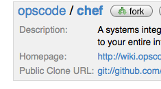

|
 | Chef Project Development
This page describes the workflow used for working on the Chef and related projects (Ohai, mixlibs, etc) source code. To learn more about Git itself:
To learn about working with git and cookbooks:
|
Initial setup of development repository
- Setup a github account
- Fork the repositories

- Clone the repositories locally
$ git clone git@github.com:yourgithubusername/chef.git
- Enter the chef directory and add an opscode remote
$ cd chef/
$ git remote add opscode git://github.com/opscode/chef.git
You'll be able to see if this is successful with git config:
$ git config --get-regexp "^remote\.opscode"
remote.opscode.url git://github.com/opscode/chef.git
remote.opscode.fetch +refs/heads/*:refs/remotes/opscode/*
- Adjust your branch to track the opscode master remote branch, by default it'll track your origin remote's master:
$ git config --get-regexp "^branch\.master"
branch.master.remote origin
branch.master.merge refs/heads/master
Change it with the following:
$ git config branch.master.remote opscode
Keeping your 'master' up-to-date!
Once all this is done, you'll be able to keep your local master up to date with the simple command:
$ git checkout master
$ git pull --rebase
Alternatively, you can synchronise your master from any branch with the full fetch/rebase syntax:
$ git fetch opscode
$ git rebase opscode/master master
Using rebase pull will do a rebase instead of a merge, which will keep a linear history with no unecessary merge commits. It'll also rewind, apply and then reapply your commits at the HEAD.
Use this Rakefile to update chef, ohai and cookbooks repos (edit as needed).
Working on topic branches
So you want to do some work? Don't put your commits directly in your master branch! It is important to use a 'topic branch' when working on a large project like Chef. The key to this concept is that each topic branch solves a single and unique problem and should usually be logically organized in the same was as a ticket on the issue tracker. A good example is a branch that adds support for a new init system, or resolves a bug when running under a specific version of CentOS. We prefer that topic branches be named after the bug that they solve so that someone with the same issue can easily find your commits in the 'git log'.
If your topic branch solves multiple bugs, reconsider if your branch is perhaps too broad. What if the person merging the contribution finds an issue with part of the branch but not another? Sometimes when you refactor a large piece of the code-base, you resolve multiple bugs and it is better to put individual issue numbers in the commit messages. One solution doesn't fit all, so use your best judgement.
- Create an appropriately named tracking branch!
$ git checkout --track -b CHEF-XX opscode/master
Setting a topic branch up to track opscode/master allows you to easily rebase your commits in preperation for merge.
- Do work
- Commit (see step two if more work remains)
$ git status
$ git commit <filespec>
- Rebase your commits against opscode/master
After your work is finished in the local topic branch, you should rebase you commits against the upstream master. This will temporarily remove your local commits, update the branch from upstream, and then reapply your local commits. You can either do this manually with 'fetch' then 'rebase', or use the 'pull --rebase' shortcut.
If there are any problems doing so, git will let you know and stop. This is important because it ensures that those that will merge your contribution into the upstream master won't have to resolve differences between your changes and the current branch to include your contribution. If you encounter merge conflicts, you should fix the files as directed and then mark as fixed with 'git add', and then continue rebasing with 'git rebase --continue'. At any stage, you can abort the rebase with 'git rebase --abort'.
Rebase your commits with fetch + rebase
$ git fetch opscode
$ git rebase opscode/master CHEF-XX
Rebase your commits with the tracking-branch shortcuts
- Push a remote branch
$ git push origin CHEF-XX
Job's done!
Don't forget to send a pull request and update the ticket. Once your work has been merged by the branch maintainer, it will no longer be necessary to keep the local branch or remote branch, so you can remove them!
- Sync your local master up:
$ git checkout master
$ git pull --rebase
Remove your local branch using -d to ensure that it has been merged by upstream. Branch -d will not delete a branch that is not an ancestor of your current head. From the git man page:
-d
Delete a branch. The branch must be fully merged in HEAD.
-D
Delete a branch irrespective of its merged status.
- Remove your local branch
- Remove your remote branch by using the full syntax to 'push', and omitting a source branch.
$ git push origin :CHEF-XX
|
|
{kind=link}
{kind=link}